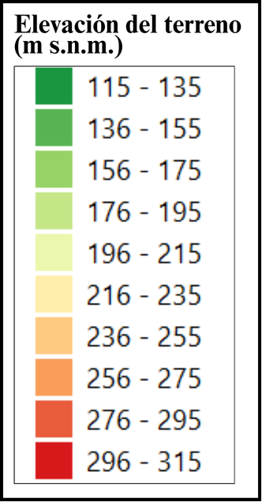

Cartografía de registros fotográficos históricos de la inundación de 1980 en Olavarría (Provincia de Buenos Aires)
Autor:
Jean Paul Pellerin
Software:
QGIS
Año:
2026
Fuente:
Archivo Histórico Municipal de Olavarría